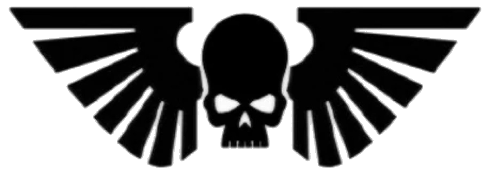
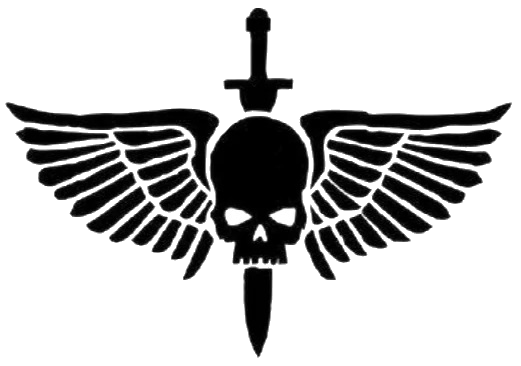
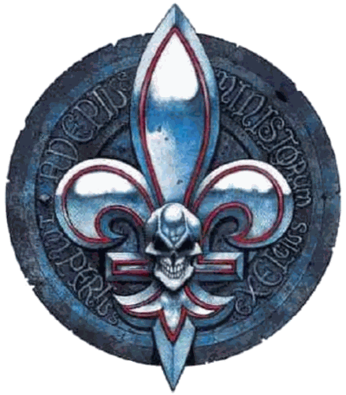
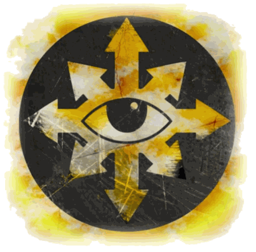
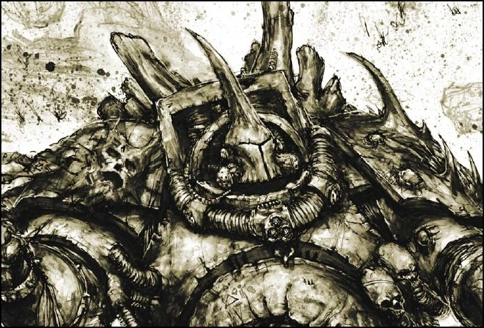

Thirteenth Black Crusade
| Thirteenth Black Crusade | |
|---|---|
| Part of the Long War and the Time of Ending | |
 Abaddon the Despoiler, Warmaster of Chaos, at the head of his thirteenth Black Crusade | |
| Date | 999.M41 |
| Location | The Cadian Gate; the Cadia, Belis Corona, Agripinaa and Scarus sectors of the Segmentum Obscurus |
| Result | Decisive Chaos victory. Cadia destroyed and the Cadian Gate opened; the Eye of Terror expands and joins the Great Rift; Belis Corona and Agripinaa hold; survivors escape through the Webway from Klaisus |
| Belligerents | |
| Imperium  Astra Militarum and Imperial Navy 28 Adeptus Astartes Chapters Adepta SororitasCo-belligerents Aeldari of Ulthwé and the Ynnari Necrons | Chaos  Black LegionTraitor Guard, Dark Mechanicum, Traitor Titan Legions, daemons and cults |
| Commanders and leaders | |
| Lord Castellan Ursarkar Creed (missing) Admiral Quarren Logan Grimnar Saint Celestine Inquisitor Katarinya Greyfax Belisarius Cawl Captain Tor Garadon Marshal Marius Amalrich Eldrad Ulthran Trazyn the Infinite | Abaddon the Despoiler Urkanthos (killed) Typhus Erebus Ahriman Lucius the Eternal Kossolax the Foresworn |
| Strength | |
| Five battlefleets and 57 naval battlegroups; 28 Chapters; regiments of 18 worlds; four Titan Legions; the Phalanx | Three warfleets; the Blackstone Fortress Will of Eternity and the Planet Killer; nine Traitor Legions; six Traitor Titan Legions |
| Casualties and losses | |
| Tens of billions dead or corrupted. Of Cadia's 850 million people, about three million escaped | Millions; the Will of Eternity destroyed |
The Thirteenth Black Crusade was the last and greatest of the Black Crusades of Abaddon the Despoiler. It was launched from the Eye of Terror in 999.M41 against the Cadian Gate, the one stable route out of the Eye, and against the fortress world of Cadia that guarded it. It was the largest war between the Imperium and the forces of Chaos since the Horus Heresy. The crusade ended in a Chaos victory. Abaddon destroyed Cadia by casting the wreck of a Blackstone Fortress onto it, the pylons that had held the Eye in check were broken, and the Eye began to spread into the Great Rift that split the galaxy.[1][2]
Abaddon's aim was to open the way to Terra and finish the Long War by killing the Emperor on the Golden Throne. The crusade was the culmination of a plan the Inquisition had traced through all twelve of his earlier crusades, and it closed the Time of Ending. A small band of survivors escaped from the Cadia system through the Webway, and from their escape came the return of the Primarch Roboute Guilliman.[1]
Prelude
[edit]The Plague of Typhus
[edit]The first warning came from the astropathic station at Belisar Majoris, which reported a great number of space hulks dropping out of the Warp and drifting toward the core worlds of the Agripinaa Sector. Space Marines boarded those they could reach and found them diseased and twisted by Chaos, and every hulk found was destroyed. A day after the Chaos ship Plagueclaw was sighted near Urthwart, sickness broke out among the crews of the Imperial Navy, and the number of ships fit for duty began to fall.[1]
Admiral Quarren led a fleet out to hunt the Plagueclaw. In the shadow of the Frenerax Dust Cloud he was ambushed by a Chaos fleet led by the Terminus Est, flagship of Typhus, Herald of Nurgle. Quarren rallied his ships and fought his way out of the trap. On the worlds behind him a plague called the Curse of Unbelief turned its victims into walking dead.[1]

The Voice of the Emperor
[edit]On the world of Lelithar a preacher arose who called himself the Voice of the Emperor. His speeches stirred whole populations, and about two in every five soldiers of Lelithar's defence regiments went over to him. Many deserted and took ship off the world. The Ordos Cadia judged him a grave danger. Sabotage and insurrection spread across the worlds of the Gate as the crusade drew near.[1]
The Battle of Tyrok Fields
[edit]Cadia was mustering its regiments with those of many other worlds. Among them were the Volscani Cataphracts, whose officers had secretly decided they would not stand against Chaos at the Gate. At Kasr Tyrok they turned on the regiments around them. They killed thousands of Guardsmen and stormed the command vehicle Excubitoi Castellum, where they murdered the Governor Primus of Cadia, Marius Porelska, together with much of the high command. Colonel Ursarkar Creed took charge, restored order and drove off the traitors. In the aftermath he was named Lord Castellan of Cadia.[1]

The storm breaks
[edit]Early in 999.M41 a team of Cadian Kasrkin was sent to the dead world of Urthwart, where astropaths foresaw the first blow. They found nothing alive except plague victims. As they made to withdraw, a ship larger than any Imperial capital ship arrived: the Planet Killer, believed lost since the Gothic War. Its weapon destroyed Urthwart with the Kasrkin still on it. Behind it a Chaos war fleet of hundreds of warships and troop transports came out of the Eye on a course for Cadia.[1]
In 999.M41 the invasion spread across the worlds of the Gate. Creed's 8th Regiment destroyed a band of Volscani traitors at Kasr Vasan just before a Chaos Space Marine vanguard could join them. The Necrons rose on worlds of the region, and the Space Wolves and Dark Angels fought both Chaos and each other's suspicions in the Sentinel Worlds. In the void the Navy could not hold orbit over most worlds of the Cadia system, but it kept control of the space lanes between them. A fleet larger than any since the Gothic War gathered at Belis Corona for a counter-offensive.[1]
Other fronts
[edit]- The Aeldari. Aeldari ships appeared across at least a dozen sectors. At times they helped Imperial ships escape. At other times they attacked them. Drukhari raiders took slaves even on Medusa, homeworld of the Iron Hands.
- Thasia and Malin's Reach. The Dark Apostle Erebus of the Word Bearers drew the Honour Company of the Ultramarines into a futile battle with Aeldari on Thasia, while he spread his creed elsewhere.
- The Webway. The sorcerer Ahriman of the Thousand Sons broke into the Webway in search of the Black Library of the Aeldari.
- Orks. Ork fleets drawn by the war attacked Imperial and Chaos forces alike.
The Imperial counter-attack
[edit]On Kasr Holn, one of the outer worlds of the Cadia system, fifteen Cadian regiments and a Titan Legion held the capital against waves of mutants led by the Black Legion. After weeks of desperate defence, a crusade of dozens of Space Marine Chapters arrived from across the galaxy. The Blood Angels sent four companies. At Agripinaa they hunted down the World Eaters champion Kossolax the Foresworn. At Kasr Partox they stood against the largest horde of World Eaters seen in living memory.[1]
Death of Macharia
[edit]The Planet Killer then appeared without warning over Macharia in the Cadia system and destroyed it with its millions of people. Cadian High Command came to believe the war could not be won quickly. It also judged that Abaddon would not dare destroy Cadia itself, because its ancient pylons were thought to keep the Gate stable. The defenders resolved to hold Cadia whatever the cost.[1]
Kasr Partox and the first repulse
[edit]At Kasr Partox twenty-three Cadian regiments and soldiers of a thousand other worlds faced the main Chaos ground assault, and in the end were forced to retreat. In orbit Admiral Quarren's fleet fought what he reported as its final stand, and most of it was destroyed. At the height of the battle a Necron fleet appeared and attacked both the Chaos fleet and the Blackstone Fortress. The fortress broke off its approach and fled the system, and the Chaos fleet followed. The surviving Chaos forces on Cadia were then destroyed. For a time it was believed that the crusade had been turned back.[1]
The fall of Cadia
[edit]Main article: Fall of Cadia
The respite was short. Abaddon returned with a second and far larger assault and loosed the full daemonic power of the Eye upon the planet. On Cadia Secundus, Kasr Kraf was overrun by the Daemon Prince Urkanthos and the Hounds of Abaddon. At the last moment the Living Saint Celestine descended upon the fortress with her Geminae, the reborn Canonesses Genevieve and Eleanor. The defenders rallied and retook the walls, and Celestine threw the corpse of Urkanthos from the battlements.[1][3]
Meanwhile Archmagos Belisarius Cawl, with the aid of the Necron Trazyn the Infinite, worked to wake the dormant Cadian pylons. The battle-fortress Phalanx of the Imperial Fists arrived after Captain Tor Garadon had driven daemons and Iron Warriors from its halls, and its arrival brought about the destruction of the Blackstone Fortress Will of Eternity. On the Elysion Fields and in the nodal cavern below them, Creed, Celestine and Inquisitor Greyfax fought Abaddon himself. As the pylons came to life and the Warp retreated, Celestine wounded the Despoiler and he withdrew.[1]
He had already prepared his answer. The fragments of the Will of Eternity were hurled from orbit onto Cadia. The impact left a crater hundreds of kilometres across, threw down the pylons and loosed the Eye upon the planet. Within hours the world began to tear itself apart. Greyfax ordered the evacuation. A small fleet carried about three million survivors to the ice moon of Klaisus, where, guided by Celestine, they escaped through a Webway gate with the help of the Ynnari. Creed was lost in the fighting.[1]

Aftermath
[edit]With the pylons fallen, the Eye of Terror spilled through the Cadian Gate and soon became part of the newborn Great Rift. Yet the other worlds of the Cadia system, Belis Corona and Agripinaa refused to yield. The forces of Chaos, victorious but not yet in full control, began to fight among themselves, and the Imperial armies slowly regained ground. Abaddon held the Gate with the Planet Killer and his one remaining Blackstone Fortress, but the road to Terra was not yet his.[2]
The survivors who fled through Klaisus, later called the Celestinian Crusade, made an uneasy alliance with the Aeldari. Its result was the restoration of Roboute Guilliman, who led the Indomitus Crusade into the new Era Indomitus.[2]
Historiography
[edit]For a long time the official histories of the Imperium recorded the crusade as a stalemate. In that account Abaddon gained a foothold on Cadia but lost control of the void, and the Gate held. The records recovered after the opening of the Great Rift show that Cadia was destroyed, and that the earlier account was either premature or a deliberate fiction of the Adeptus Terra. The question of which it was is still disputed.[2]
Timeline
[edit]The principal events of the campaign, all in 999.M41, in the order in which they are generally recorded.
| Date | Event | Theatre |
|---|---|---|
| 999.M41 | The Plague of Typhus begins as space hulks drop out of the Warp toward the Agripinaa Sector; the Imperial Navy is struck by sickness. | Agripinaa Sector |
| 999.M41 | Admiral Quarren is ambushed by the fleet of Typhus in the shadow of the Frenerax Dust Cloud. | Frenerax Dust Cloud |
| 999.M41 | The preacher who calls himself the Voice of the Emperor turns much of the Lelithar garrison against the Imperium. | Lelithar |
| 999.M41 | The Volscani Cataphracts massacre regiments at the Battle of Tyrok Fields; Ursarkar Creed is named Lord Castellan of Cadia. | Cadia |
| 999.M41 | The Planet Killer destroys Urthwart with a team of Kasrkin still on it. | Urthwart |
| 999.M41 | Creed's 8th Regiment destroys a band of Volscani traitors at Kasr Vasan. | Cadia |
| 999.M41 | A fleet gathers at Belis Corona for a counter-offensive; the Necrons rise on worlds of the region. | Belis Corona |
| 999.M41 | The Battle of Kasr Holn; a crusade of Space Marine Chapters arrives to relieve the capital. | Kasr Holn |
| 999.M41 | The Planet Killer destroys Macharia in the Cadia system. | Cadia system |
| 999.M41 | The Battle of Kasr Partox; the first Chaos ground assault is forced back and the surviving Chaos forces on Cadia are destroyed. | Cadia |
| 999.M41 | Abaddon returns with a second assault; Kasr Kraf is overrun and the Living Saint Celestine retakes its walls. | Cadia Secundus |
| 999.M41 | Belisarius Cawl and Trazyn the Infinite wake the Cadian pylons; the Phalanx destroys the Blackstone Fortress Will of Eternity. | Cadia |
| 999.M41 | The fragments of the Will of Eternity strike Cadia; the pylons fall and the Eye of Terror spills into the galaxy. | Cadia |
| 999.M41 | About three million survivors escape through a Webway gate from Klaisus with the help of the Ynnari; the Cadian Gate opens into the Great Rift. | Klaisus |